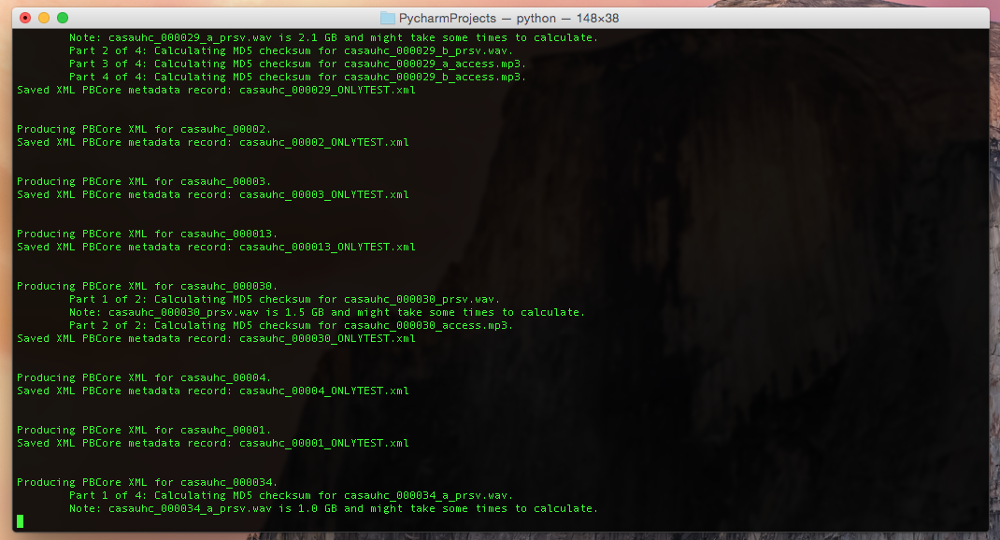

This script generates PBCore xml files from data exported from CONTENTdm and derives technical metadata from any audio or video files that are located subdirectories of the folder the csv files is located in.
To use with the command line, simply type “makepbcore” followed by a csv files containing the data from a CONTENTdm export.
makepbcore /Volumes/CAPPS-01/Headlands/Headlands_caps_export.csv
Argument Setting Description -d Debug mode This prints all debug messages to the screen as well the log files. -nc No checksums MD5 Checksum hashes will not be calculated. -g gui mode This open the graphical user interface.
To start the graphical user interface, simple type the following command in a terminal window.
makepbcore -g
Note
- This script works with comma-separated values (.csv) files only. Tab-separated values (.tsv) files are currently not supported. To use tsv files, convert them first into csv format using the tsv2csv utility (see below).
- Optional log files are created in a log folder if the options is toggled in the pbcore-csv-settings.ini file.
CSV Element PBCore Mapping Notes Internet Archive URL
- <pbcoreIdentifier> Attributes: source=”CAVPP” annotation=”Internet Archive URL”
Object Identifier
- <pbcoreIdentifier> Attributes: annotation=”Object Identifier” source=”CAVPP”
Call Number
- <pbcoreIdentifier> Attributes: annotation=”Call Number”
- The attribute source is included with the partner institution’s name.
- Data in this field is split up by semicolons(;) with each getting a new <pbcoreIdentifier> record.
Project Identifier
- <pbcoreIdentifier> Attributes: annotation=”Project Identifier” source=”CAVPP”
Project Note
- <extensionValue>
- With the <extensionValue> equal to “projectNote”
Institution Asset Type
- <pbcoreAssetType>
Media Type
- <instantiationMediaType>
Generation
- <instantiationGenerations>
Main or Supplied Title
- <pbcoreTitle> Attributes: titleType=”Main”
Additional Title
- <pbcoreTitle> Attributes: titleType=”Alternative”
Series Title
- <pbcoreTitle> Attributes: titleType=”Series”
Description or Content Summary
- <pbcoreDescription>
Why the recording is significant to California/local history x
- Element not mapped.
Producer
- <pbcoreCreator>
- With the <role> element equal to “Producer”
Director
- <pbcoreCreator>
- With the <role> element equal to “Director”
Writer
- <pbcoreCreator>
- With the <role> element equal to “Writer”
Interviewer
- <pbcoreCreator>
- With the <role> element equal to “Interviewer”
Performer
- <pbcoreCreator>
- With the <role> element equal to “Performer”
Country of Creation
- <extensionValue>
- With the <extensionValue> equal to “countryOfCreation”
Date Created
- <pbcoreAssetDate> Attribute: dateType=”created”
- <instantiationDate
Date Published
- <pbcoreAssetDate> Attribute: dateType=”published”
Copyright Statement
- <pbcoreRightsSummary> Attribute: annotation=”Copyright Statement”
Gauge and Format
- <instantiationPhysical>
Total Number of Reels or Tapes
- <instantiationAnnotation> Attributes: annotationType=”Extent”
Duration
- <instantiationDuration>
Silent or Sound
- <instantiationTracks>
Color and/or Black and White
- <instantiationColors>
Camera
- <pbcoreContributor>
- with <role> element equal to “Camera”
Editor
- <pbcoreContributor>
- with <role> element equal to “Editor”
Sound
- <pbcoreContributor>
- with <role> element equal to “Sound”
Music
- <pbcoreContributor>
- with <role> element equal to “Music”
Cast
- <pbcoreContributor>
- with <role> element equal to “Cast”
Interviewee
- <pbcoreContributor>
- with <role> element equal to “Interviewee”
Speaker
- <pbcoreContributor>
- with <role> element equal to “Speaker”
Musician
- <pbcoreContributor>
- with <role> element equal to “Musician”
Publisher
- <pbcorePublisher>
- with <role> element equal to “Publisher”
Distributor
- <pbcorePublisher>
- with <role> element equal to “Distributor”
Language
- <instantiationLanguage> Attribute: source=”ISO 639.2”
Subject Topic
- <pbcoreSubject>
Subject Topic Authority Source
- Located within the source attribute of <pbcoreSubject>
- Unless another subject authority is specified, the source will default to the LOC subject headings
Subject Entity
- <pbcoreSubject>
Subject Entity Authority Source
- Located within the source attribute of <pbcoreSubject>
Genre
- <pbcoreGenre>
Genre Authority Source
- Located within the source attribute of <pbcoreGenre>
Spatial Coverage
- <coverage>
- With <coverageType> element equal to “Spatial”
Temporal Coverage
- <coverage>
- With <coverageType> element equal to “Temporal”
Collection Guide Title
- mapped to the <collectionTitle> attribute of the <pbcoreCollection> element
Collection Guide URL x Not currently implemented Relationship
- <pbcoreRelationIdentifier>
Relationship Type
- <pbcoreRelationType>
Aspect Ratio Running Speed
- If the media type is moving image, the data will go into <essenceTrackFrameRate> with the attribute, unitsOfMeasure=”fps”
- If the media type is audio, the data will go into into <essenceTrackPlaybackSpeed> with the attribute, unitsOfMeasure=”ips”
Timecode Content Begins
- <instantiationTimeStart>
Track Standard
- <essenceTrackStandard>
Channel Configuration
- <instantiationChannelConfiguration>
Subtitles/Intertitles/Closed Captions x Not currently implemented Stock Manufacturer
- <instantiationAnnotation> Attributes: annotationType=”StockManufacture”
Base Type
- <instantiationAnnotation> Attributes: annotationType=”BaseType”
Base Thickness
- <instantiationAnnotation> Attributes: annotationType=”BaseThickness”
Copyright Holder
- <pbcoreRightsSummary> Attributes: annotation=”Copyright Holder”
Copyright Holder Info
- <pbcoreRightsSummary> Attributes: annotation=”Copyright Holder Info”
Copyright Date
- <pbcoreRightsSummary> Attributes: annotation=”Copyright Date”
- The field is split up by a semicolon(;), comma(,), and the word “and”. Each creates a new <pbcoreRightsSummary> record.
Copyright Notice
- <pbcoreRightsSummary> Attributes: annotation=”Copyright Notice”
Institutional Rights Statement (URL)
- <instantiationAnnotation> Attributes: annotationType=”Additional Technical Notes for Overall”
Object ARK
- <pbcoreIdentifier>
Institution ARK
- <pbcoreIdentifier> Attributes: annotation=”Institution ARK” source=”CDL”
Institution URL
- <pbcoreIdentifier> Attributes: annotation=”Institution URL” source=”CDL”
Quality Control Notes
- <instantiationAnnotation> Attributes: annotation=”CAVPP Quality Control/Partner Quality Control”
- Data in this field is split up by semicolons(;) with each getting a new <pbcoreIdentifier> record.
Additional Descriptive Notes for Overall Work
- <pbcoreDescription> Attributes: dateType=”Additional Descriptive Notes for Overall Work”
- Data in this field is split up by semicolons(;) with each getting a new <pbcoreDescription> record.
Additional Technical Notes for Overall Work
- <instantiationAnnotation> Attributes: annotationType=”Additional Technical Notes for Overall”
- Data in this field is split up by semicolons(;) with each getting a new <instantiationAnnotation> record.
Transcript
- <pbcoreDescription> Attributes: descriptionType=”Transcript”
Cataloger Notes
- <instantiationAnnotation> Attributes: annotationType=”Cataloger Notes”
- Data in this field is split up by semicolons(;) with each getting a new <pbcoreIdentifier> record.
OCLC number x
- Element not mapped.
Date created x
- Element not mapped.
Date modified x
- Element not mapped.
Reference URL x
- Element not mapped.
CONTENTdm number x
- Element not mapped.
CONTENTdm file name x
- Element not mapped.
CONTENTdm file path x
- Element not mapped.